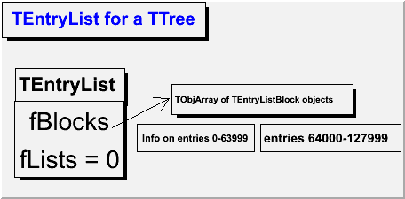
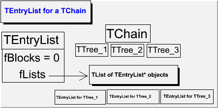
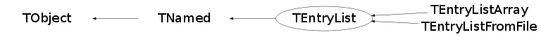

class TEntryList: public TNamed
TEntryList: a List of entry numbers in a TTree or TChain
- for a TTree (fBlocks data member is non-zero)
Entry numbers are stored in TEntryListBlocks, which, in their turn, are stored
in the TObjArray fBlocks. The range of the entry numbers is cut into intervals
of kBlockSize entries (currently 64000), so that the first block contains
information which entries out of the first 64000 pass the selection, the second
block - which entries out of the 64000-127999 interval pass the selection, etc.
Some blocks, obviously, might be empty. The internal representation of entry
numbers in the blocks is described in the TEntryListBlock class description, and
this representation might be changed by calling OptimizeStorage() function
(when the list is filled via the Enter() function, this is done automatically,
except for the last block).
Individual entry lists can be merged (functions Merge() and Add())
to make an entry list for a TChain of corresponding TTrees.

{ //=========Macro generated from canvas: c/c //========= (Tue Jan 23 16:58:56 2007) by ROOT version5.15/01 TCanvas *c = new TCanvas("c", "c",213,172,460,253); c->Range(0,0,1,1); c->SetBorderSize(2); c->SetFrameFillColor(0); TPaveText *pt = new TPaveText(0.00518135,0.810811,0.507772,0.989189,"br"); pt->SetFillColor(19); pt->SetTextColor(4); TText *text = pt->AddText("TEntryList for a TTree"); pt->Draw(); pt = new TPaveText(0.0387597,0.483696,0.307494,0.657609,"br"); pt->SetFillColor(19); text = pt->AddText("TEntryList"); pt->Draw(); pt = new TPaveText(0.0363636,0.107527,0.306494,0.489247,"br"); pt->SetFillColor(19); pt->SetTextFont(42); text = pt->AddText("fBlocks"); text = pt->AddText("fLists = 0"); pt->Draw(); pt = new TPaveText(0.338501,0.23913,0.627907,0.375,"br"); pt->SetBorderSize(1); pt->SetFillColor(19); text = pt->AddText("Info on entries 0-63999"); pt->Draw(); pt = new TPaveText(0.643411,0.23913,0.989664,0.375,"br"); pt->SetBorderSize(1); pt->SetFillColor(19); text = pt->AddText("entries 64000-127999"); pt->Draw(); pt = new TPaveText(0.423773,0.423913,0.870801,0.576087,"br"); pt->SetFillColor(19); text = pt->AddText("TObjArray of TEntryListBlock objects"); pt->Draw(); TArrow *arrow = new TArrow(0.277202,0.356757,0.418605,0.505435,0.05,">"); arrow->SetFillColor(1); arrow->SetFillStyle(1001); arrow->Draw(); return c; } - for a TChain (fLists data member is non-zero)
It contains a TList of sub-lists (TEntryList objects, corresponding to each TTree)
Trees and lists are matched by the TTree name and its file name (full path).
All sub-lists are returned by the GetLists() function and individual lists are
returned by GetEntryList() function. Such lists are no different from the lists for
TTrees, described above.

{ //=========Macro generated from canvas: c/c //========= (Mon Jan 22 19:00:21 2007) by ROOT version5.15/01 TCanvas *c = new TCanvas("c", "c",172,104,447,249); c->Range(0,0,1,1); c->SetBorderSize(2); c->SetFrameFillColor(0); TPaveText *pt = new TPaveText(0.0026738,0.790055,0.417112,0.994475,"br"); pt->SetFillColor(19); pt->SetTextColor(4); TText *text = pt->AddText("TEntryList for a TChain"); pt->Draw(); pt = new TPaveText(0.00802139,0.541436,0.294118,0.701657,"br"); pt->SetBorderSize(1); pt->SetFillColor(19); pt->SetTextFont(42); text = pt->AddText("TEntryList"); pt->Draw(); pt = new TPaveText(0.0106952,0.237569,0.294118,0.546961,"br"); pt->SetBorderSize(1); pt->SetFillColor(19); pt->SetTextFont(42); text = pt->AddText("fBlocks = 0"); text = pt->AddText("fLists"); pt->Draw(); pt = new TPaveText(0.483957,0.607735,0.68984,0.773481,"br"); pt->SetBorderSize(1); pt->SetFillColor(19); pt->SetTextFont(42); text = pt->AddText("TChain"); pt->Draw(); pt = new TPaveText(0.347594,0.475138,0.494652,0.596685,"br"); pt->SetBorderSize(1); pt->SetFillColor(19); pt->SetTextFont(42); text = pt->AddText("TTree_1"); pt->Draw(); pt = new TPaveText(0.508021,0.475138,0.660428,0.59116,"br"); pt->SetBorderSize(1); pt->SetFillColor(19); pt->SetTextFont(42); text = pt->AddText("TTree_2"); pt->Draw(); pt = new TPaveText(0.673797,0.469613,0.826203,0.59116,"br"); pt->SetBorderSize(1); pt->SetFillColor(19); pt->SetTextFont(42); text = pt->AddText("TTree_3"); pt->Draw(); pt = new TPaveText(0.251337,0.0331492,0.483957,0.165746,"br"); pt->SetBorderSize(1); pt->SetFillColor(19); text = pt->AddText("TEntryList for TTree_1"); pt->Draw(); pt = new TPaveText(0.491979,0.038674,0.729947,0.171271,"br"); pt->SetBorderSize(1); pt->SetFillColor(19); text = pt->AddText("TEntryList for TTree_2"); pt->Draw(); pt = new TPaveText(0.737968,0.038674,0.97861,0.171271,"br"); pt->SetBorderSize(1); pt->SetFillColor(19); text = pt->AddText("TEntryList for TTree_3"); pt->Draw(); pt = new TPaveText(0.410667,0.21978,0.816,0.395604,"br"); pt->SetFillColor(19); text = pt->AddText("TList of TEntryList* objects"); pt->Draw(); TArrow *arrow = new TArrow(0.224,0.296703,0.4,0.296703,0.05,">"); arrow->SetFillColor(1); arrow->SetFillStyle(1001); arrow->Draw(); return c; }
{kind=link}
{kind=link}
Operations on entry lists
- Add() - if the lists are for the same tree, adds all the entries of the second list to the first list. If the lists are for different trees, creates a TEntryList with 2 sublists for each TTree. If the lists are for TChains, merges the ones for the same trees and adds new sublists for the TTrees that were not included in the first TEntryList
- Subtract() - if the lists are for the same TTree, removes the entries of the second list from the first list. If the lists are for TChains, loops over all sub-lists
- GetEntry(n) - returns the n-th entry number
- Next() - returns next entry number. Note, that this function is much faster than GetEntry, and it's called when GetEntry() is called for 2 or more indices in a row.
TTree::Draw() and TChain::Draw()
Use option entrylist to write the results of TTree::Draw and TChain::Draw into an entry list. Example:
tree->Draw(">>elist", "x<0 && y>0", "entrylist");
TEntryList *elist = (TEntryList*)gDirectory->Get("elist");
Example of Loop en TEntryList with a TChain
void loopChain() {
TFile *fe = TFile::Open("myelist.root");
TEntryList *myelist=(TEntryList*)fe->Get("myelist");
TChain *ch = new TChain("ntuple");
ch->Add("hsimple.root");
ch->Add("hsimple2.root");
Long64_t listEntries=myelist->GetN();
Long64_t chainEntries = ch->GetEntries();
Int_t treenum=0;
ch->SetEntryList(myelist);
for (Long64_t el =0;elGetEntryAndTree(el,treenum);
Long64_t chainEntry = treeEntry+ch->GetTreeOffset()[treenum];
printf("el=%lld, treeEntry=%lld, chainEntry=%lld, treenum=%d\n",el,treeEntry,chainEntry,treenum);
}
}
TSelectors
To fill an TEntryList from a TSelector correctly, one must add the TEntryList object to the output list of the selector (TSelector::fOutput). This is the only way to make the sub-lists of the TEntryList switch when the current tree of the TChain is changed.Using a TEntryList as input (TTree::SetEntryList() and TChain::SetEntryList())
while the TTree::SetEntryList() function is only setting the TTree::fEntryList data member, the same function in TChain also finds correspondance between the TTrees of this TChain and the sub-lists of this TEntryList.TEntryList and the current directory
TEntryList objects are automatically added to the current directory (like TTrees). However, in case of a TEntryList for a chain, only the top-level entry list is added, not the sub-lists for specific trees. Placing entry lists in the current directory allows calling them as a part of a TTreeFormula expression, so if the user wants to extract a sublist from a TChain entry list via the GetEntryList() or some other function, he has to add it to the current directory to be able to use it in TTreeFormula expressions.TEntryList and TEventList
TTree::SetEventList() and TChain::SetEventList() transform a TEventList into a TEntryList See comments to those functions for more detailsFunction Members (Methods)
public:
| TEntryList() | |
| TEntryList(const TTree* tree) | |
| TEntryList(const TEntryList& elist) | |
| TEntryList(const char* name, const char* title) | |
| TEntryList(const char* name, const char* title, const TTree* tree) | |
| TEntryList(const char* name, const char* title, const char* treename, const char* filename) | |
| virtual | ~TEntryList() |
| void | TObject::AbstractMethod(const char* method) const |
| virtual void | Add(const TEntryList* elist) |
| virtual void | TObject::AppendPad(Option_t* option = "") |
| virtual void | TObject::Browse(TBrowser* b) |
| static TClass* | Class() |
| virtual const char* | TObject::ClassName() const |
| virtual void | TNamed::Clear(Option_t* option = "") |
| virtual TObject* | TNamed::Clone(const char* newname = "") const |
| virtual Int_t | TNamed::Compare(const TObject* obj) const |
| virtual Int_t | Contains(Long64_t entry, TTree* tree = 0) |
| virtual void | TNamed::Copy(TObject& named) const |
| virtual void | TObject::Delete(Option_t* option = "")MENU |
| virtual void | DirectoryAutoAdd(TDirectory*) |
| virtual Int_t | TObject::DistancetoPrimitive(Int_t px, Int_t py) |
| virtual void | TObject::Draw(Option_t* option = "") |
| virtual void | TObject::DrawClass() constMENU |
| virtual TObject* | TObject::DrawClone(Option_t* option = "") constMENU |
| virtual void | TObject::Dump() constMENU |
| virtual Bool_t | Enter(Long64_t entry, TTree* tree = 0) |
| virtual void | TObject::Error(const char* method, const char* msgfmt) const |
| virtual void | TObject::Execute(const char* method, const char* params, Int_t* error = 0) |
| virtual void | TObject::Execute(TMethod* method, TObjArray* params, Int_t* error = 0) |
| virtual void | TObject::ExecuteEvent(Int_t event, Int_t px, Int_t py) |
| virtual void | TObject::Fatal(const char* method, const char* msgfmt) const |
| virtual void | TNamed::FillBuffer(char*& buffer) |
| virtual TObject* | TObject::FindObject(const char* name) const |
| virtual TObject* | TObject::FindObject(const TObject* obj) const |
| virtual TEntryList* | GetCurrentList() const |
| virtual TDirectory* | GetDirectory() const |
| virtual Option_t* | TObject::GetDrawOption() const |
| static Long_t | TObject::GetDtorOnly() |
| virtual Long64_t | GetEntriesToProcess() const |
| virtual Long64_t | GetEntry(Int_t index) |
| virtual Long64_t | GetEntryAndTree(Int_t index, Int_t& treenum) |
| virtual TEntryList* | GetEntryList(const char* treename, const char* filename, Option_t* opt = "") |
| virtual const char* | GetFileName() const |
| virtual const char* | TObject::GetIconName() const |
| virtual TList* | GetLists() const |
| virtual Long64_t | GetN() const |
| virtual const char* | TNamed::GetName() const |
| virtual char* | TObject::GetObjectInfo(Int_t px, Int_t py) const |
| static Bool_t | TObject::GetObjectStat() |
| virtual Option_t* | TObject::GetOption() const |
| virtual Bool_t | GetReapplyCut() const |
| virtual const char* | TNamed::GetTitle() const |
| virtual const char* | GetTreeName() const |
| virtual Int_t | GetTreeNumber() const |
| virtual UInt_t | TObject::GetUniqueID() const |
| virtual Bool_t | TObject::HandleTimer(TTimer* timer) |
| virtual ULong_t | TNamed::Hash() const |
| virtual void | TObject::Info(const char* method, const char* msgfmt) const |
| virtual Bool_t | TObject::InheritsFrom(const char* classname) const |
| virtual Bool_t | TObject::InheritsFrom(const TClass* cl) const |
| virtual void | TObject::Inspect() constMENU |
| void | TObject::InvertBit(UInt_t f) |
| virtual TClass* | IsA() const |
| virtual Bool_t | TObject::IsEqual(const TObject* obj) const |
| virtual Bool_t | TObject::IsFolder() const |
| Bool_t | TObject::IsOnHeap() const |
| virtual Bool_t | TNamed::IsSortable() const |
| Bool_t | TObject::IsZombie() const |
| virtual void | TNamed::ls(Option_t* option = "") const |
| void | TObject::MayNotUse(const char* method) const |
| virtual Int_t | Merge(TCollection* list) |
| virtual Long64_t | Next() |
| virtual Bool_t | TObject::Notify() |
| void | TObject::Obsolete(const char* method, const char* asOfVers, const char* removedFromVers) const |
| static void | TObject::operator delete(void* ptr) |
| static void | TObject::operator delete(void* ptr, void* vp) |
| static void | TObject::operator delete[](void* ptr) |
| static void | TObject::operator delete[](void* ptr, void* vp) |
| void* | TObject::operator new(size_t sz) |
| void* | TObject::operator new(size_t sz, void* vp) |
| void* | TObject::operator new[](size_t sz) |
| void* | TObject::operator new[](size_t sz, void* vp) |
| virtual void | OptimizeStorage() |
| virtual void | TObject::Paint(Option_t* option = "") |
| virtual void | TObject::Pop() |
| virtual void | Print(Option_t* option = "") const |
| virtual Int_t | TObject::Read(const char* name) |
| virtual void | TObject::RecursiveRemove(TObject* obj) |
| virtual Bool_t | Remove(Long64_t entry, TTree* tree = 0) |
| virtual void | Reset() |
| void | TObject::ResetBit(UInt_t f) |
| virtual void | TObject::SaveAs(const char* filename = "", Option_t* option = "") constMENU |
| virtual void | TObject::SavePrimitive(ostream& out, Option_t* option = "") |
| void | TObject::SetBit(UInt_t f) |
| void | TObject::SetBit(UInt_t f, Bool_t set) |
| virtual void | SetDirectory(TDirectory* dir) |
| virtual void | TObject::SetDrawOption(Option_t* option = "")MENU |
| static void | TObject::SetDtorOnly(void* obj) |
| virtual void | SetEntriesToProcess(Long64_t nen) |
| virtual void | SetFileName(const char* filename) |
| virtual void | TNamed::SetName(const char* name)MENU |
| virtual void | TNamed::SetNameTitle(const char* name, const char* title) |
| static void | TObject::SetObjectStat(Bool_t stat) |
| virtual void | SetReapplyCut(Bool_t apply = kFALSE)TOGGLE |
| virtual void | SetShift(Bool_t shift) |
| virtual void | TNamed::SetTitle(const char* title = "")MENU |
| virtual void | SetTree(const TTree* tree) |
| virtual void | SetTree(const char* treename, const char* filename) |
| virtual void | SetTreeName(const char* treename) |
| virtual void | SetTreeNumber(Int_t index) |
| virtual void | TObject::SetUniqueID(UInt_t uid) |
| virtual void | ShowMembers(TMemberInspector& insp) |
| virtual Int_t | TNamed::Sizeof() const |
| virtual void | Streamer(TBuffer& b) |
| void | StreamerNVirtual(TBuffer& b) |
| virtual void | Subtract(const TEntryList* elist) |
| virtual void | TObject::SysError(const char* method, const char* msgfmt) const |
| Bool_t | TObject::TestBit(UInt_t f) const |
| Int_t | TObject::TestBits(UInt_t f) const |
| virtual void | TObject::UseCurrentStyle() |
| virtual void | TObject::Warning(const char* method, const char* msgfmt) const |
| virtual Int_t | TObject::Write(const char* name = 0, Int_t option = 0, Int_t bufsize = 0) |
| virtual Int_t | TObject::Write(const char* name = 0, Int_t option = 0, Int_t bufsize = 0) const |
protected:
| virtual void | TObject::DoError(int level, const char* location, const char* fmt, va_list va) const |
| void | TObject::MakeZombie() |
private:
| TEntryList& | operator=(const TEntryList&) |
Data Members
public:
| enum { | kBlockSize | |
| }; | ||
| enum TObject::EStatusBits { | kCanDelete | |
| kMustCleanup | ||
| kObjInCanvas | ||
| kIsReferenced | ||
| kHasUUID | ||
| kCannotPick | ||
| kNoContextMenu | ||
| kInvalidObject | ||
| }; | ||
| enum TObject::[unnamed] { | kIsOnHeap | |
| kNotDeleted | ||
| kZombie | ||
| kBitMask | ||
| kSingleKey | ||
| kOverwrite | ||
| kWriteDelete | ||
| }; |
protected:
| TObjArray* | fBlocks | blocks with indices of passing events (TEntryListBlocks) |
| TEntryList* | fCurrent | ! currently filled entry list |
| TDirectory* | fDirectory | ! Pointer to directory holding this tree |
| Long64_t | fEntriesToProcess | used on proof to set the number of entries to process in a packet |
| TString | fFileName | name of the file, where the tree is |
| Long64_t | fLastIndexQueried | ! used to optimize GetEntry() function from a loop |
| Long64_t | fLastIndexReturned | ! used to optimize GetEntry() function from a loop |
| TList* | fLists | a list of underlying entry lists for each tree of a chain |
| Long64_t | fN | number of entries in the list |
| Int_t | fNBlocks | number of TEntryListBlocks |
| TString | TNamed::fName | object identifier |
| Bool_t | fReapply | If true, TTree::Draw will 'reapply' the original cut |
| Bool_t | fShift | ! true when some sub-lists don't correspond to trees |
| ULong_t | fStringHash | ! Hash value of a string of treename and filename |
| TString | TNamed::fTitle | object title |
| TString | fTreeName | name of the tree |
| Int_t | fTreeNumber | ! the index of the tree in the chain (used when the entry |
Class Charts
{kind=link}
{kind=link}
{kind=link}
{kind=link}

Function documentation
TEntryList(const char* name, const char* title, const TTree* tree)
constructor with name and title, which also sets the tree
TEntryList(const char* name, const char* title, const char* treename, const char* filename)
c-tor with name and title, which also sets the treename and the filename
Int_t Contains(Long64_t entry, TTree* tree = 0)
When tree = 0, returns from the current list When tree != 0, finds the list, corresponding to this tree When tree is a chain, the entry is assumed to be global index and the local entry is recomputed from the treeoffset information of the chain
void DirectoryAutoAdd(TDirectory* )
Called by TKey and others to automatically add us to a directory when we are read from a file.
Bool_t Enter(Long64_t entry, TTree* tree = 0)
Add entry #entry to the list When tree = 0, adds to the current list When tree != 0, finds the list, corresponding to this tree When tree is a chain, the entry is assumed to be global index and the local entry is recomputed from the treeoffset information of the chain
Bool_t Remove(Long64_t entry, TTree* tree = 0)
Remove entry #entry from the list When tree = 0, removes from the current list When tree != 0, finds the list, corresponding to this tree When tree is a chain, the entry is assumed to be global index and the local entry is recomputed from the treeoffset information of the chain
Long64_t GetEntry(Int_t index)
return the number of the entry #index of this TEntryList in the TTree or TChain See also Next().
Long64_t GetEntryAndTree(Int_t index, Int_t& treenum)
TEntryList * GetEntryList(const char* treename, const char* filename, Option_t* opt = "")
return the entry list, correspoding to treename and filename
By default, the filename is first tried as is, and then, if the corresponding list
is not found, the filename is expanded to the absolute path, and compared again.
To avoid it, use option "ne"
Long64_t Next()
return the next non-zero entry index (next after fLastIndexQueried) this function is faster than GetEntry()
void OptimizeStorage()
Checks if the array representation is more economical and if so, switches to it
void Print(Option_t* option = "") const
Print this list option = "" - default - print the name of the tree and file option = "all" - print all the entry numbers
void SetTree(const char* treename, const char* filename)
If a list for a tree with such name and filename exists, sets it as the current sublist If not, creates this list and sets it as the current sublist ! the filename is taken as provided, no extensions to full path or url !
void SetTree(const TTree* tree)
If a list for a tree with such name and filename exists, sets it as the current sublist If not, creates this list and sets it as the current sublist The name of the file, where the tree is, is taken as tree->GetTree()->GetCurrentFile()->GetName(), and then expanded either to the absolute path, or to full url. If, for some reason, you want to provide the filename in a different format, use SetTree(const char *treename, const char *filename), where the filename is taken "as is".
void Subtract(const TEntryList* elist)
remove all the entries of this entry list, that are contained in elist
TEntryList& operator=(const TEntryList& )